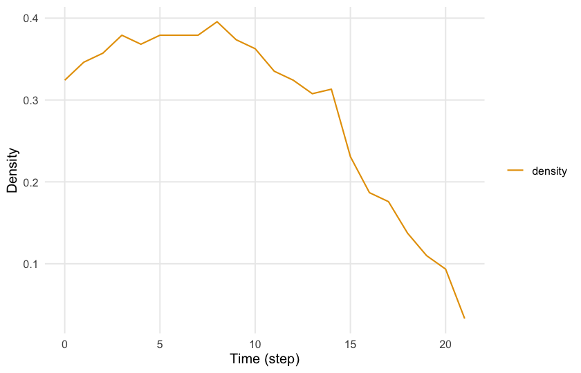
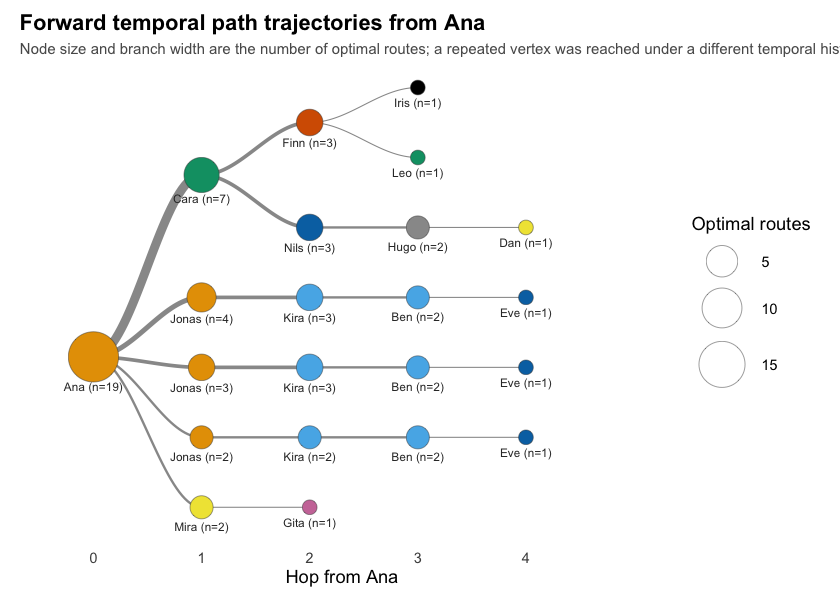
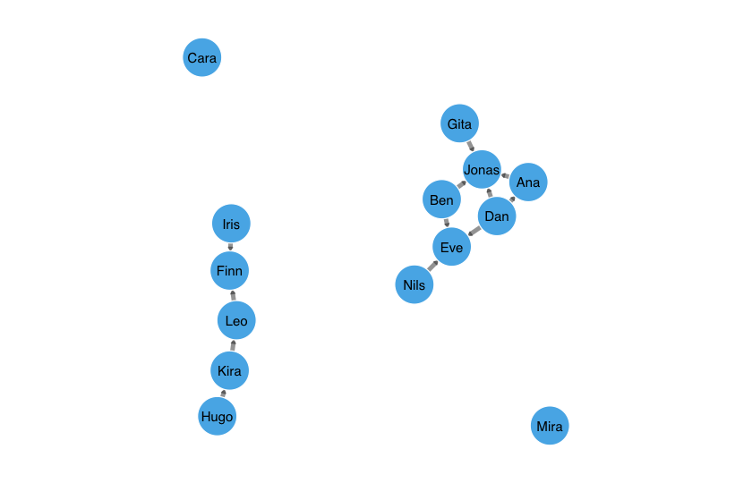
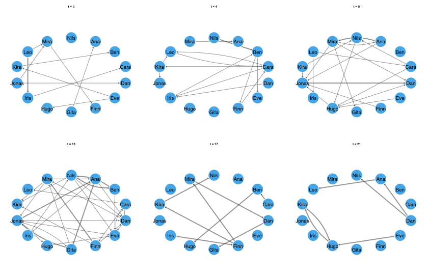
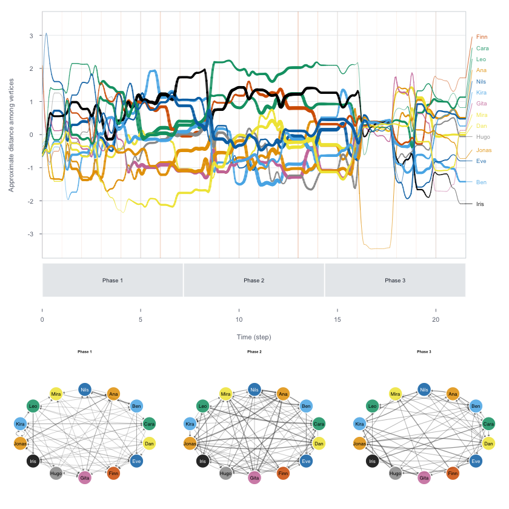

Dynet provides functions for constructing, analysing, and visualising temporal networks in R. The constructor accepts interval, contact, threaded, and co-presence data. Analyses include graph-level structure, vertex-level centrality, relational spell onsets and terminations, duration, burstiness, group mixing, and time-respecting paths. Measurement functions return tidy data frames identified by vertex names, temporal intervals, and measures, as applicable. Core calculations are implemented in base R.
Temporal networks
Temporal networks map the dynamics of relationships as they occur over time, preserving when interactions occur, their duration, and their temporal order. Two common representations are contact sequences and interval networks (Holme and Saramäki, 2012). In a contact sequence, interactions are recorded as timestamps and treated as instantaneous because their duration is negligible for the analysis. In an interval network, relationships are represented as relational spells with onset and termination times. Both representations accommodate repeated interactions between the same vertices.
In temporal networks, interactions unfold as time progresses, and paths must follow their chronological order. For example, if A shares information with B on Monday and B interacts with C on Tuesday, the information can potentially reach C through B. If B’s interaction with C occurred on Sunday, that interaction could not carry information received on Monday. A sequence that follows this temporal order is called a time-respecting path. Unlike static networks, which connect interactions regardless of when they occurred, temporal networks permit only paths that follow the order and availability of interactions. Saqr and Peeters (2022).
Temporal networks also account for when relationships begin and end. A connection may be active during one period and absent during another, changing the network’s structure and the paths available between vertices. Combining all interactions into a static network obscures these changes: the resulting network may appear densely connected even when few connections were active at the same time. Saqr and Peeters (2022).
Temporal networks can be analysed at the graph, vertex, and edge levels. Graph-level measures, such as density and reciprocity, describe the overall network structure. Vertex-level measures, such as degree, closeness, and betweenness, describe the positions of individual vertices. Edge-level measures describe relationships between pairs of vertices, including their onset, termination, duration, and recurrence. Examining these measures over time reveals changes in the network, its vertices, and their relationships. Time-respecting paths provide additional information about reachability, the time required to reach other vertices, and the intermediate vertices involved.
The construction of a temporal network depends on how relationships and their timing are recorded. Dynet supports four data formats. Interval data explicitly record when each relationship begins and ends; a duration may be supplied instead of a termination time. Contact data record interactions at specific timestamps, with their duration treated as negligible. Threaded data, such as discussion replies, include timestamps and discussion identifiers. For these data, the constructor assigns each reply relationship an onset at its posting time and a termination at the last recorded event in its discussion. Co-presence data record participation in shared events, such as meetings or seminars; relationships between participants are derived from their attendance at the same event.
Installation
The development version can be installed from the author’s R-universe repository, which also provides the cograph dependency, or from GitHub. The installation commands are not evaluated when this page is rendered.
install.packages("Dynet",
repos = c("https://mohsaqr.r-universe.dev",
"https://cloud.r-project.org"))
# or from GitHub
remotes::install_github("mohsaqr/Dynet")Data
The examples use bundled datasets in tidy format. school_contacts is a simulated interval dataset containing 240 face-to-face contacts among fourteen students over approximately 21.5 arbitrary time units. forum_posts contains 241 simulated posts by twenty participants over eight weeks; forum_people supplies participant attributes, including role. seminar_attendance records simulated attendance at weekly seminars. The package also includes mooc_posts, containing 2,529 posts from the MOOC forum analysed by Saqr (2024), and thought_chains, a synthetic reply dataset based on the study by Saqr, López-Pernas, and Törmänen (2026).
library(Dynet)
head(school_contacts)
#> from to start end
#> 1 Jonas Dan 0.00 1.10
#> 2 Gita Ana 0.14 0.98
#> 3 Leo Mira 0.15 0.42
#> 4 Leo Iris 0.15 0.96
#> 5 Kira Ben 0.33 0.69
#> 6 Leo Iris 0.38 0.50In school_contacts, from and to identify the relational endpoints, while start and end specify contact onset and termination.
Building a network
dynet() recognises common column names automatically, using case-insensitive matching. Relational endpoints may be named from/to, sender/receiver, or source/target; interval boundaries may be named start/end or onset/terminus. For contact data, recognised timestamp names include time, timestamp, date, and datetime. Explicit column specification is needed only when names do not match recognised aliases or when their intended interpretation is ambiguous. The format argument can explicitly select the input format; for example, format = "contact" specifies instantaneous interactions.
dynet() represents relational data in tidy format, retaining the endpoints and recording the onset, termination, duration, and multiplicity of each relational spell. For interval data, termination is supplied through end or calculated as start + duration. Duration is recorded as duration = end - start. Instantaneous contacts have equal onset and termination times and therefore zero duration. Multiplicity is recorded in weight, which defaults to 1 when no multiplicity variable is supplied or recognised.
The following example constructs a temporal network from school_contacts, a simulated dataset of 240 contacts among fourteen students. The supplied variables from and to identify the relational endpoints, while start and end record contact onset and termination in arbitrary time units. These names are recognised automatically, so no column arguments are required.
library(Dynet)
dn <- dynet(school_contacts)
dn
#> # Temporal network (interval format, directed) | a cograph netobject
#> # 14 vertices | 240 edge spells | 110 distinct pairs
#> # observed from 0 to 21.52 step, binned every 1
#>
#> from to start end duration weight
#> Jonas Dan 0.00 1.10 1.10 1
#> Gita Ana 0.14 0.98 0.84 1
#> Leo Mira 0.15 0.42 0.27 1
#> Leo Iris 0.15 0.96 0.81 1
#> Kira Ben 0.33 0.69 0.36 1
#> Leo Iris 0.38 0.50 0.12 1
#> # 234 more spells. summary() describes the network; plot() draws it.summary() describes the network over its observation period, including the number of vertices, relational spells, and distinct pairs of connected vertices. It also reports mean snapshot density: the average proportion of possible vertex pairs connected within each measurement interval. This distinguishes the relationships accumulated over the full observation period from the connectivity observed within individual intervals.
summary(dn)
#> property value
#> 1 format interval
#> 2 directed yes
#> 3 vertices 14
#> 4 edge spells 240
#> 5 distinct pairs 110
#> 6 time unit step
#> 7 observed from 0
#> 8 observed to 21.52
#> 9 span 21.52
#> 10 bin width 1
#> 11 time bins 22
#> 12 mean snapshot density 0.0829
#> 13 temporal density not computed
#> 14 sessions none
#> 15 vertex attributes noneThe same constructor can represent timestamped replies as either instantaneous contacts or relationships that remain active within a discussion. In the first call, time explicitly identifies the timestamp column, and the constructor infers contact data. In the second, thread selects threaded construction: each reply relationship remains active until the last recorded event in its discussion. The nodes argument supplies participant attributes from forum_people.
contacts <- dynet(forum_posts, time = "timestamp")
forum <- dynet(forum_posts, thread = "thread", nodes = forum_people)Co-presence data record participation in shared events rather than direct interactions between participants. The actor argument identifies the participant column, and group identifies the shared event. The constructor derives an undirected relationship between each pair of participants attending the same event, with onset and termination determined by the event’s recorded temporal extent.
seminars <- dynet(seminar_attendance, actor = "student", group = "seminar")These ties represent shared attendance; they do not establish that participants interacted directly.
Dynet accepts numeric times, dates, and date-times. Numeric times retain their supplied scale. Dates and date-times are converted to elapsed time, with the unit selected automatically when time_unit = "auto", the default. The unit can also be specified explicitly through time_unit, for example as "hours" or "days". In the threaded example, time is expressed in days.
The timeline plot displays when each pair of vertices is connected during the observation period. For interval data, colour indicates the proportion of each time bin during which at least one relational spell is active. Overlapping spells between the same endpoints are counted once, so the plot represents the duration of connectivity rather than the number of interactions.
plot(dn)
Measuring in windows
Window-based analyses use four arguments to define when measurements are taken and which interactions they include. start and end delimit the measurement period. step specifies the interval between measurements, while window specifies the duration covered by each measurement. Setting window equal to step produces non-overlapping intervals; a larger window produces overlapping intervals. For snapshot measures, window = 0 evaluates the network at individual time points.
metrics() computes graph-level measures within the specified temporal windows. These measures describe the structure of the network as a whole. For example, density is the proportion of possible ties present within a window, while reciprocity describes the extent to which directed ties are reciprocated. Other measures characterise connected components, local configurations of ties, and the distribution of centrality across vertices.
The following call computes density at one-unit intervals, using a seven-unit window for each measurement. Because window exceeds step, successive measurements include overlapping periods.
density <- metrics(dn, measure = "density", step = 1, window = 7)
density
#> # Density (graph-level)
#> # 22 time points, step 1, window 7 (rolling) | time in step
#> time measure value
#> 0 density 0.3241758
#> 1 density 0.3461538
#> 2 density 0.3571429
#> 3 density 0.3791209
#> 4 density 0.3681319
#> 5 density 0.3791209
#> 6 density 0.3791209
#> 7 density 0.3791209
#> 8 density 0.3956044
#> 9 density 0.3736264
#> 10 density 0.3626374
#> 11 density 0.3351648
#> # 10 more rows. summary() aggregates them; plot() draws them.The result is a tidy data frame identifying the measurement time, measure, and value. Multiple statistics can be requested through measure; their results are distinguished by the measure column. Available measures include density, reciprocity, transitivity, dyad and triad censuses, component counts, centralisation, and Krackhardt’s indices. Their definitions and calculation conventions are documented in ?metrics.
summary() summarises the resulting time series, including its mean, dispersion, range, and peak time. plot() displays how the measure changes over the observation period.
summary(density)
#> measure n mean sd min max peak_time
#> 1 density 22 0.285964 0.111584 0.03296703 0.3956044 8
plot(density)
Vertex measures
centrality_series() computes measures that describe how a vertex is connected to the rest of the network. Each centrality captures a different aspect of structural position. Degree counts direct connections, indicating the extent of a vertex’s immediate neighbourhood. In directed networks, indegree counts incoming connections and outdegree counts outgoing connections. Strength accounts for the weights of those connections, distinguishing the number of connected neighbours from the multiplicity of their relationships.
Closeness centrality is based on the shortest-path distances from a vertex to other vertices. Higher closeness indicates shorter average distances, meaning that fewer steps are required to reach other vertices. In a directed network, these paths follow tie direction.
Betweenness measures the extent to which a vertex lies on shortest paths between other vertices. It therefore identifies potential intermediary positions, although occupying such a position does not establish that information actually passed through that vertex.
Other measures incorporate the positions of a vertex’s neighbours. Eigenvector centrality assigns higher scores to vertices connected to other highly central vertices. PageRank and hub and authority scores also use neighbouring vertices’ scores but apply different rules for directed relationships. Prestige measures characterise a vertex through its incoming connections, including, for some variants, the vertices that can reach it indirectly. The choice of measure should therefore follow the substantive question and the meaning assigned to tie direction.
By default, these measures are calculated within successive temporal windows. This produces a centrality trajectory for each vertex, showing when it becomes more or less connected, accessible, or prominent as an intermediary. The following call computes degree using the default measurement intervals:
degree <- centrality_series(dn, measure = "degree")
degree
#> # Degree (node-level)
#> # 14 vertices | 22 time points, 1 per bin | time in step
#> time node measure value
#> 0 Ana degree 1
#> 0 Ben degree 1
#> 0 Cara degree 1
#> 0 Dan degree 1
#> 0 Eve degree 2
#> 0 Finn degree 1
#> 0 Gita degree 1
#> 0 Hugo degree 1
#> 0 Iris degree 2
#> 0 Jonas degree 2
#> 0 Kira degree 2
#> 0 Leo degree 2
#> # 296 more rows. summary() aggregates them; plot() draws them.The result is a tidy data frame containing vertex names, measurement times, measures, and values. summary() summarises each trajectory; peak_time identifies when the corresponding centrality attained its maximum.
summary(degree)
#> node measure n mean sd min max peak_time
#> 1 Ana degree 22 2.181818 2.015095 0 7 6
#> 2 Ben degree 22 2.000000 1.234427 0 4 4
#> 3 Cara degree 22 2.227273 1.342770 0 5 4
#> 4 Dan degree 22 2.090909 1.444500 1 5 13
#> 5 Eve degree 22 2.272727 2.051290 0 8 14
#> 6 Finn degree 22 2.000000 1.661898 0 6 12
#> 7 Gita degree 22 1.727273 1.777688 0 7 6
#> 8 Hugo degree 22 2.318182 1.861550 0 6 6
#> 9 Iris degree 22 1.772727 1.066004 0 4 11
#> 10 Jonas degree 22 2.863636 2.076982 0 7 13
#> 11 Kira degree 22 2.636364 1.255292 1 6 6
#> 12 Leo degree 22 1.636364 1.432462 0 5 6
#> 13 Mira degree 22 2.272727 1.695423 0 6 13
#> 14 Nils degree 22 2.181818 2.174229 0 7 14path_centrality() instead computes centrality from time-respecting paths across the specified observation period. Temporal closeness measures how quickly a vertex can reach other reachable vertices, using the inverse of their mean arrival latency. Temporal betweenness measures a vertex’s contribution as an intermediary on optimal temporal paths between other vertices. These measures account for the order and availability of interactions, whereas window-based centralities describe the connections present within each window.
closeness <- path_centrality(dn, measure = "closeness")
closeness
#> # Closeness (node-level)
#> # 14 vertices | time in step
#> # computed on time-respecting paths across the whole window
#> node measure value
#> Ana closeness 0.1313662
#> Ben closeness 0.1815896
#> Cara closeness 0.1931075
#> Dan closeness 0.2230994
#> Eve closeness 0.2616221
#> Finn closeness 0.1644945
#> Gita closeness 0.1404950
#> Hugo closeness 0.1878341
#> Iris closeness 0.2398082
#> Jonas closeness 0.3674392
#> Kira closeness 0.2107994
#> Leo closeness 0.3747478
#> # 2 more rows. summary() aggregates them; plot() draws them.Time-respecting paths
paths() examines how a source vertex can reach other vertices through a sequence of interactions over time. A path may involve a direct interaction or several intermediate vertices. Each interaction must occur when its tie is available, and a vertex cannot pass something onward before receiving it. Waiting between interactions is permitted: if A contacts B on Monday and B next contacts C on Wednesday, a path from A to C can include the intervening wait.
The timing of these interactions determines which path arrives earliest. Suppose A can contact C directly on Friday, but can reach C through B on Wednesday. The two-hop path through B arrives earlier than the direct path. paths() therefore minimises arrival time first, rather than the number of hops. If several paths arrive equally early, it retains those with the fewest hops.
The following call searches from Ana, beginning at the start of the observation period in this example:
from_ana <- paths(dn, from = "Ana")
from_ana
#> # Time-respecting paths from 'Ana', from t = 0
#> # reaches 13 of 13 other vertices | time in step
#> node reachable arrival_time attained latency n_hops n_paths
#> Ana TRUE 0.00 TRUE 0.00 0 1
#> Ben TRUE 9.59 TRUE 9.59 3 3
#> Cara TRUE 6.67 TRUE 6.67 1 1
#> Dan TRUE 7.98 TRUE 7.98 4 1
#> Eve TRUE 11.66 TRUE 11.66 4 3
#> Finn TRUE 6.96 TRUE 6.96 2 1
#> Gita TRUE 6.36 TRUE 6.36 2 1
#> Hugo TRUE 7.98 TRUE 7.98 3 1
#> Iris TRUE 10.00 TRUE 10.00 3 1
#> Jonas TRUE 2.12 TRUE 2.12 1 1
#> Kira TRUE 6.12 TRUE 6.12 2 2
#> Leo TRUE 9.65 TRUE 9.65 3 1
#> # 2 more rows. summary() aggregates them; plot() draws the tree.The result describes the optimal paths to each destination. arrival_time records the earliest time at which the destination can be reached. latency is the elapsed time between the search origin and arrival, including any waiting for subsequent interactions. n_hops records how many ties the path traverses, while n_paths records how many distinct paths achieve both the earliest arrival and the minimum hop count. A destination with n_paths = 0 is unreachable under the specified temporal constraints.
By default, traversing a tie takes zero time, although a path may still require waiting for a later interaction. A positive traversal_time assigns a duration to each traversal, expressed in the network’s time unit. This is an analytical assumption that affects arrival times and potentially reachability; it should be selected according to the process being represented.
summary(from_ana)
#> property value
#> 1 source Ana
#> 2 direction forward
#> 3 reachable 13
#> 4 reachable share 1
#> 5 median latency 7.51
#> 6 max latency 11.66
#> 7 median hops 2
#> 8 max hops 4The summary describes the reachable set and its path characteristics. These results concern possible routes through the recorded relationships. They do not establish that information, resources, or other content actually travelled along those routes.
Reachability also depends on when the search begins. Starting later excludes earlier contacts that may have connected the source to other vertices. The following call starts at time 18:
from_ana_late <- paths(dn, from = "Ana", start = 18)
summary(from_ana_late)
#> property value
#> 1 source Ana
#> 2 direction forward
#> 3 reachable 5
#> 4 reachable share 0.385
#> 5 median latency 2.43
#> 6 max latency 2.68
#> 7 median hops 2
#> 8 max hops 3Comparing the two results shows how the timing of participation changes the destinations Ana can reach and the routes available to her. This distinction is lost in a static network, where all recorded connections are available without regard to their timing.
pathways() provides the corresponding vertex sequences, such as A → B → C, and counts the optimal paths following each sequence. The path plot displays the routes and their temporal progression.
pathways(dn, from = "Ana")
#> # Time-respecting pathways (5 distinct routes)
#> # 7 optimal routes counted
#> route endpoint count share n_hops
#> Ana -> Jonas -> Kira -> Ben -> Eve Eve 3 0.4285714 4
#> Ana -> Mira -> Gita Gita 1 0.1428571 2
#> Ana -> Cara -> Finn -> Iris Iris 1 0.1428571 3
#> Ana -> Cara -> Finn -> Leo Leo 1 0.1428571 3
#> Ana -> Cara -> Nils -> Hugo -> Dan Dan 1 0.1428571 4
#> arrival_time
#> 11.66
#> 6.36
#> 10.00
#> 9.65
#> 7.98
plot(from_ana)
Temporal reachability
reachability() summarises which vertices can be connected through time-respecting paths. Forward reachability identifies the vertices that a source can reach during the specified observation period. Backward reachability identifies the vertices from which a focal vertex can be reached by the end of that period. These sets need not be identical: the order of interactions may permit a path from A to B without permitting a return path from B to A.
The direction argument selects "forward", "backward", or "both". Setting measure = "reach_count" returns the number of reachable vertices other than the focal vertex. Setting measure = "reach" expresses this count as a proportion of all other vertices in the network.
reach <- reachability(
dn,
direction = "both",
measure = c("reach", "reach_count")
)
reach
#> # Reachability (node-level)
#> # 14 vertices | time in step
#> # measures: forward_reach, forward_reach_count, backward_reach, backward_reach_count
#> # count and share of other vertices joined by a time-respecting path
#> node measure value
#> Ana forward_reach 1
#> Ben forward_reach 1
#> Cara forward_reach 1
#> Dan forward_reach 1
#> Eve forward_reach 1
#> Finn forward_reach 1
#> Gita forward_reach 1
#> Hugo forward_reach 1
#> Iris forward_reach 1
#> Jonas forward_reach 1
#> Kira forward_reach 1
#> Leo forward_reach 1
#> # 44 more rows. summary() aggregates them; plot() draws them.A forward reach of 1 indicates that the source can reach every other vertex within the specified period. A value of 0 indicates that it cannot reach any other vertex. Intermediate values describe partial reachability. These measures include indirect connections through intermediate vertices, so they capture more than the immediate neighbourhood measured by degree.
Reachability describes whether a temporal connection is possible; it does not describe how quickly the destination can be reached. Two vertices can therefore have equal reachability but different temporal closeness because their arrival latencies differ. Examining reachability alongside path timing distinguishes the extent of possible contact from the time required to achieve it.
Tie dynamics and duration
Relational spells have an onset, a termination, and a duration. Examining these properties describes when relationships become active, when they cease, and how long they persist. In datasets with repeated interactions, several spells may connect the same pair of vertices. Counts of spell onsets and terminations therefore differ from counts of distinct connected pairs.
events() summarises spell onsets and terminations within temporal windows through the measures "formation" and "dissolution", which are requested by default. The following call uses the network’s default measurement intervals:
turnover <- events(dn)
summary(turnover)
#> measure n mean sd min max peak_time
#> 1 dissolution 22 10.90909 6.132731 3 27 14
#> 2 formation 22 10.90909 6.689787 0 29 13These counts describe changes in relational activity. A spell onset does not necessarily introduce a previously unconnected pair: it may represent another interaction between endpoints that already have an active spell. Similarly, the termination of one spell does not necessarily disconnect its endpoints if another spell remains active.
durations() summarises the duration of relationships. By default, results are grouped by endpoint pair. Setting measure = "mean" returns the mean spell duration for each pair:
lengths <- durations(dn, measure = "mean")
lengths
#> # Relationship duration (edge-level)
#> # time in step
#> # durations in step
#> from to measure value
#> Ana Cara mean 0.1000000
#> Ana Dan mean 0.3400000
#> Ana Gita mean 0.4220000
#> Ana Iris mean 0.5000000
#> Ana Jonas mean 0.5850000
#> Ana Kira mean 0.1100000
#> Ana Leo mean 1.1900000
#> Ana Mira mean 0.3466667
#> Ben Eve mean 0.6100000
#> Ben Finn mean 0.2300000
#> Ben Gita mean 0.3400000
#> Ben Hugo mean 0.1475000
#> # 98 more rows. summary() aggregates them; plot() draws them.Different duration summaries answer different questions. Summed duration adds the durations of individual spells, including overlapping spells separately. Union duration measures the total time during which at least one spell connects the endpoints, counting overlap once. For example, if two spells connect the same pair during hours 1–3 and 2–4, their summed duration is four hours, while their union duration is three hours. Mean duration describes the average length of an individual spell.
The unit argument determines whether durations are summarised for endpoint pairs, individual spells, vertex activity, or ties incident to a vertex. Vertex activity describes when a vertex is present or eligible to participate; incident-tie duration describes its recorded relationships. These quantities should be interpreted separately.
Burstiness and memory
burstiness() describes how interactions are distributed over time using the intervals between successive events. Regular activity produces intervals of similar length, whereas clustered activity produces short intervals within bursts and longer intervals between them. The burstiness coefficient summarises this variation: −1 corresponds to equal intervals, 0 to the exponential inter-event distribution associated with a Poisson process, and values approaching 1 indicate increasingly heterogeneous intervals (Goh and Barabási, 2008).
rhythm <- burstiness(dn)
summary(rhythm)
#> node measure n mean sd min max
#> 1 Ana burstiness 1 0.24575324 NA 0.24575324 0.24575324
#> 2 Ana events 1 36.00000000 NA 36.00000000 36.00000000
#> 3 Ana memory 1 -0.03128243 NA -0.03128243 -0.03128243
#> 4 Ben burstiness 1 0.03288611 NA 0.03288611 0.03288611
#> 5 Ben events 1 34.00000000 NA 34.00000000 34.00000000
#> 6 Ben memory 1 -0.19926343 NA -0.19926343 -0.19926343
#> 7 Cara burstiness 1 -0.05610924 NA -0.05610924 -0.05610924
#> 8 Cara events 1 35.00000000 NA 35.00000000 35.00000000
#> 9 Cara memory 1 0.07458054 NA 0.07458054 0.07458054
#> 10 Dan burstiness 1 -0.05061772 NA -0.05061772 -0.05061772
#> 11 Dan events 1 35.00000000 NA 35.00000000 35.00000000
#> 12 Dan memory 1 0.21654310 NA 0.21654310 0.21654310
#> 13 Eve burstiness 1 0.09217906 NA 0.09217906 0.09217906
#> 14 Eve events 1 34.00000000 NA 34.00000000 34.00000000
#> 15 Eve memory 1 0.25882509 NA 0.25882509 0.25882509
#> 16 Finn burstiness 1 0.02938507 NA 0.02938507 0.02938507
#> 17 Finn events 1 29.00000000 NA 29.00000000 29.00000000
#> 18 Finn memory 1 -0.22653754 NA -0.22653754 -0.22653754
#> 19 Gita burstiness 1 0.06104200 NA 0.06104200 0.06104200
#> 20 Gita events 1 31.00000000 NA 31.00000000 31.00000000
#> 21 Gita memory 1 0.21165690 NA 0.21165690 0.21165690
#> 22 Hugo burstiness 1 0.09885443 NA 0.09885443 0.09885443
#> 23 Hugo events 1 34.00000000 NA 34.00000000 34.00000000
#> 24 Hugo memory 1 0.11283700 NA 0.11283700 0.11283700
#> 25 Iris burstiness 1 -0.05968068 NA -0.05968068 -0.05968068
#> 26 Iris events 1 30.00000000 NA 30.00000000 30.00000000
#> 27 Iris memory 1 -0.09356972 NA -0.09356972 -0.09356972
#> 28 Jonas burstiness 1 -0.02750549 NA -0.02750549 -0.02750549
#> 29 Jonas events 1 46.00000000 NA 46.00000000 46.00000000
#> 30 Jonas memory 1 0.23391957 NA 0.23391957 0.23391957
#> 31 Kira burstiness 1 -0.07048265 NA -0.07048265 -0.07048265
#> 32 Kira events 1 38.00000000 NA 38.00000000 38.00000000
#> 33 Kira memory 1 -0.14972726 NA -0.14972726 -0.14972726
#> 34 Leo burstiness 1 -0.01020265 NA -0.01020265 -0.01020265
#> 35 Leo events 1 28.00000000 NA 28.00000000 28.00000000
#> 36 Leo memory 1 0.48001912 NA 0.48001912 0.48001912
#> 37 Mira burstiness 1 0.09968547 NA 0.09968547 0.09968547
#> 38 Mira events 1 36.00000000 NA 36.00000000 36.00000000
#> 39 Mira memory 1 0.18691159 NA 0.18691159 0.18691159
#> 40 Nils burstiness 1 0.08408761 NA 0.08408761 0.08408761
#> 41 Nils events 1 34.00000000 NA 34.00000000 34.00000000
#> 42 Nils memory 1 0.22784733 NA 0.22784733 0.22784733Burstiness and memory describe different properties of event timing. Burstiness measures variation in interval lengths, without considering their order. Memory measures the correlation between consecutive intervals. Positive memory indicates that short intervals tend to follow short intervals and long intervals tend to follow long intervals. Negative memory indicates a tendency for short and long intervals to alternate. A value near zero indicates little linear association between successive intervals.
A vertex can therefore exhibit bursty activity without substantial memory: its inter-event intervals may vary considerably while consecutive interval lengths remain weakly correlated. Interpreting both measures helps distinguish variability in activity timing from dependence between successive intervals.
Mixing between groups
mixing() counts distinct active vertex pairs within and between groups defined by a vertex attribute. Repeated spells and their weights do not multiply these binary-dyad counts. The forum network inherits role from forum_people. Setting step = 60, which exceeds this network’s observation period, produces a single interval for the comparison.
mixing(forum, attribute = "role", step = 60)
#> # Mixing by role (graph-level)
#> # 1 time points, 60 per bin | time in days
#> # measures: Facilitator -> Facilitator, Student -> Facilitator, Teacher -> Facilitator, Facilitator -> Student, Student -> Student, Teacher -> Student, Facilitator -> Teacher, Student -> Teacher, Teacher -> Teacher
#> # active binary-dyad counts between vertex groups per time bin
#> time measure value from_group to_group
#> 0 Facilitator -> Facilitator 0 Facilitator Facilitator
#> 0 Student -> Facilitator 3 Student Facilitator
#> 0 Teacher -> Facilitator 0 Teacher Facilitator
#> 0 Facilitator -> Student 4 Facilitator Student
#> 0 Student -> Student 136 Student Student
#> 0 Teacher -> Student 12 Teacher Student
#> 0 Facilitator -> Teacher 1 Facilitator Teacher
#> 0 Student -> Teacher 16 Student Teacher
#> 0 Teacher -> Teacher 0 Teacher TeacherNetwork aggregation, subsetting, and snapshots
collapse_network() summarises a temporal network as a weighted static network. Each edge represents a pair of vertices connected during the observation period, and its weight summarises their relational spells according to the selected rule. This provides an overall description of relationships while removing their temporal order.
Setting weight = "union_duration" assigns each edge the total time during which at least one spell connects its endpoints. Overlapping spells are counted once. For example, spells spanning hours 1–3 and 2–4 produce an edge weight of three hours.
flat <- collapse_network(dn, weight = "union_duration")
flat
#> # Collapsed temporal network | 14 vertices | 110 edges | weight: union_duration
#> # 0 to 21.52 step
#> from to binary union_duration total_duration duration_fraction spell_count
#> Ana Cara 1 0.10 0.10 0.004646840 1
#> Ana Dan 1 1.02 1.02 0.047397770 3
#> Ana Gita 1 1.99 2.11 0.092472119 5
#> Ana Iris 1 0.50 0.50 0.023234201 1
#> Ana Jonas 1 2.34 2.34 0.108736059 4
#> Ana Kira 1 0.11 0.11 0.005111524 1
#> weight_sum weighted_duration latest_weight first last activity.duration
#> 1 0.10 1 6.67 6.77 0.10
#> 3 1.02 1 12.04 20.10 1.02
#> 5 2.11 1 6.57 14.16 1.99
#> 1 0.50 1 13.80 14.30 0.50
#> 4 2.34 1 2.12 9.13 2.34
#> 1 0.11 1 11.60 11.71 0.11
#> activity.count
#> 1
#> 3
#> 5
#> 1
#> 4
#> 1induce_subgraph() selects part of the network for further analysis. Selection may be based on vertex attributes or structural measures. In the following example, degree is calculated over the full observation period, and vertices with degree greater than 16 are retained together with the relational spells connecting them.
core <- induce_subgraph(dn, degree > 16)
core
#> # Temporal network (interval format, directed) | a cograph netobject
#> # 5 vertices | 31 edge spells | 14 distinct pairs
#> # observed from 0 to 20.46 step, binned every 1
#>
#> from to start end duration weight
#> Jonas Dan 0.00 1.10 1.10 1
#> Eve Kira 0.77 1.42 0.65 1
#> Kira Eve 1.95 2.47 0.52 1
#> Jonas Kira 2.05 2.09 0.04 1
#> Dan Jonas 3.14 3.49 0.35 1
#> Dan Eve 3.20 3.33 0.13 1
#> # 25 more spells. summary() describes the network; plot() draws it.snapshots() extracts connections within specified temporal windows. The following call returns the connections in the default measurement window containing time 3:
snapshots(dn, at = 3)
#> # Snapshot edges | 1 bin | 12 tie rows | time in step
#> time from to weight n_spells
#> 1 3 Ana Jonas 1 1
#> 2 3 Kira Leo 1 1
#> 3 3 Leo Finn 1 1
#> 4 3 Nils Eve 1 1
#> 5 3 Ben Jonas 1 1
#> 6 3 Ben Eve 1 1
#> 7 3 Dan Ana 1 1
#> 8 3 Dan Jonas 1 1
#> 9 3 Dan Eve 1 1
#> 10 3 Gita Jonas 1 1
#> # 2 more rows. summary() counts them by bin.A snapshot summarises connectivity within its window; it does not retain the ordering of interactions within that interval.
Editing a temporal network
Dynet provides functions for modifying vertices, relational spells, and observation settings. Each editing function returns a modified network without changing the input object. This allows alternative network specifications to be constructed while retaining the original for comparison.
add_nodes() adds vertices and their attributes. add_ties() adds relational spells using their endpoints, onset, and termination. The following example adds a vertex named Omar, then adds a directed relationship from Ana to Omar, active from time 4 to time 6:
dn2 <- add_nodes(dn, data.frame(name = "Omar"))
dn2 <- add_ties(dn2, data.frame(from = "Ana", to = "Omar", start = 4, end = 6))
dn2
#> # Temporal network (interval format, directed) | a cograph netobject
#> # 15 vertices | 241 edge spells | 111 distinct pairs
#> # observed from 0 to 21.52 step, binned every 1
#>
#> from to start end duration weight
#> Jonas Dan 0.00 1.10 1.10 1
#> Gita Ana 0.14 0.98 0.84 1
#> Leo Mira 0.15 0.42 0.27 1
#> Leo Iris 0.15 0.96 0.81 1
#> Kira Ben 0.33 0.69 0.36 1
#> Leo Iris 0.38 0.50 0.12 1
#> # 235 more spells. summary() describes the network; plot() draws it.Related functions support removal, revision, and relabelling. remove_nodes() and remove_ties() remove selected vertices or spells; update_nodes() and update_ties() revise their attributes or values; and rename_nodes() changes vertex names while maintaining their references in the network.
set_vertex_spells() specifies periods during which vertices are present or eligible to participate. set_observations() specifies the periods over which the network is observed. These declarations serve different purposes: vertex activity constrains participation, whereas observation periods constrain measurement. Changing observation settings does not alter the original relational spell endpoints.
Visualising temporal networks
Temporal network visualisations describe both the structure of relationships and their development over time. Different views address different questions: which vertices are connected during a particular period, how connectivity changes between periods, and when individual relationships are active.
Setting type = "network" displays connections within a selected measurement window. The at argument identifies the time of interest. Setting type = "snapshots" displays several temporal slices using a shared layout, making changes in connections easier to compare.
plot(dn, type = "network", at = 3)
plot(dn, type = "snapshots", panels = 6)
#> Drawing 6 of 22 bins, evenly spaced across the window.
A timeline places relational activity along a time axis. For interval data, colour represents the proportion of each time bin during which an endpoint pair is connected. This view shows periods of activity and inactivity that may be difficult to distinguish in successive network diagrams.
plot(dn, type = "timeline")
A proximity timeline follows the changing relationships among vertices. Network distances are calculated within temporal slices and represented as positions along a single axis. Lines connect each vertex’s positions across slices, showing how its proximity to other vertices changes. Nearby lines indicate shorter network distances in the corresponding slice; they do not necessarily indicate a direct tie.
plot(dn, type = "proximity")
These views complement one another: network diagrams show connections, activity timelines show their timing, and proximity timelines summarise changes in network distances.
Animating temporal networks
animate() displays a sequence of network snapshots over the observation period. Vertices retain a shared layout across frames, allowing changes in connections to be followed without changes in position obscuring the comparison.
The temporal settings follow the same conventions as window-based measurement. start and end delimit the period, step determines the time between successive frames, and window determines the period represented in each frame. A positive window displays connections active within that interval; it does not imply that all displayed connections were active simultaneously.
The output filename determines the format. GIF output requires the gifski package, while MP4 and WebM output require av. The animation tutorial provides examples of temporal settings, visual options, and export procedures.
Further documentation
The package documentation provides additional examples and methodological details:
-
vignette("dynet")presents an analysis from network construction through measurement and interpretation. -
vignette("building-networks")explains input formats, column recognition, vertex attributes, observation periods, sessions, and censoring. -
vignette("ch17-temporal-networks")reproduces the temporal network analysis chapter of Learning Analytics Methods and Tutorials using the bundled MOOC data. - The package website provides a function catalogue, animation examples, dataset tutorials, and a case study using
thought_chains.
Function help pages document arguments, defaults, return values, and calculation conventions. For example, ?dynet, ?metrics, and ?paths describe network construction, graph-level measurement, and temporal path analysis, respectively.
References
Butts, C. T. (2008). A relational event framework for social action. Sociological Methodology, 38(1), 155–200.
Goh, K.-I., & Barabási, A.-L. (2008). Burstiness and memory in complex systems. EPL (Europhysics Letters), 81(4), 48002.
Holme, P., & Saramäki, J. (2012). Temporal networks. Physics Reports, 519(3), 97–125.
Kempe, D., Kleinberg, J., & Kumar, A. (2002). Connectivity and inference problems for temporal networks. Journal of Computer and System Sciences, 64(4), 820–842.
Masuda, N., & Lambiotte, R. (2016). A guide to temporal networks. World Scientific.
Moody, J. (2002). The importance of relationship timing for diffusion. Social Forces, 81(1), 25–56.
Nicosia, V., Tang, J., Mascolo, C., Musolesi, M., Russo, G., & Latora, V. (2013). Graph metrics for temporal networks. In P. Holme & J. Saramäki (Eds.), Temporal networks (pp. 15–40). Springer.
Pan, R. K., & Saramäki, J. (2011). Path lengths, correlations, and centrality in temporal networks. Physical Review E, 84(1), 016105.
Saqr, M. (2024). Temporal network analysis: Introduction, methods and analysis with R. In M. Saqr & S. López-Pernas (Eds.), Learning analytics methods and tutorials: A practical guide using R. Springer.
Saqr, M., López-Pernas, S., & Törmänen, T. (2026). A temporal network approach to reveal the longitudinal dynamics of CSCL group regulation and productive collaboration. International Journal of Computer-Supported Collaborative Learning, 21, 237–270. https://doi.org/10.1007/s11412-025-09464-5
Saqr, M., & Nouri, J. (2020). High resolution temporal network analysis to understand and improve collaborative learning. In Proceedings of the Tenth International Conference on Learning Analytics & Knowledge (pp. 314–319). ACM.
Saqr, M., & Peeters, W. (2022). Temporal networks in collaborative learning: A case study. British Journal of Educational Technology, 53(5), 1283–1303. https://doi.org/10.1111/bjet.13187